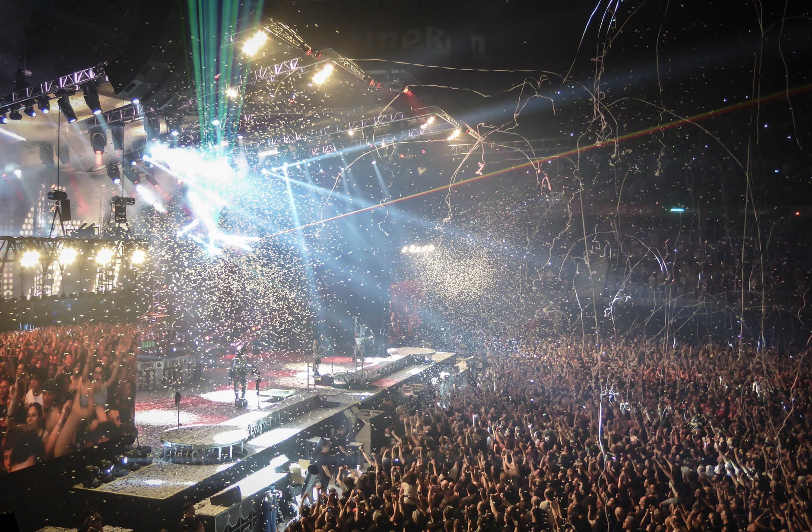
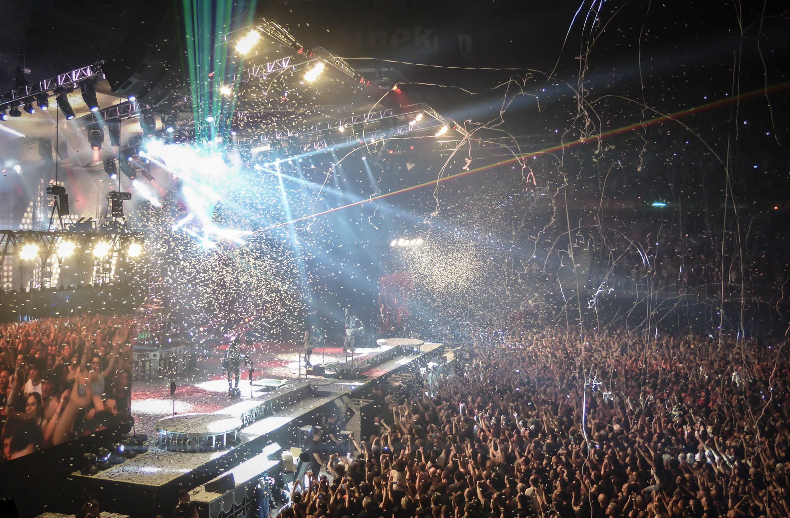
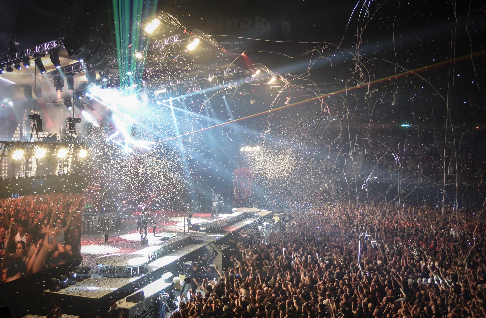

Our Image Galary
Click on the buttons to change the grid view and enjoy different view.
 



“Fifty years ago, we started something very big,” says Brian Wilson. “So now we’re celebrating together in a very big way.” “It’s pretty miraculous that we canstart out as a bunch of guys who didn’t know anything about fame or money, or anything likethat,” says Mike Love. “All we knew was we liked to sing and make harmonies together. So to haveit become part of American musical culture is pretty amazing.”
The amazing yet true saga of The Heart Of Sea is well chronicled, and by any standard it’s one of the greatest and most musical stories ever told. Now this singular West Coast story continues with a global celebration that is befitting of the remarkable and enduring legacy of these Rock & Roll Hall of Famers. To mark their 50th Anniversary,the founding members of The Heart Of Sea are reuniting for a major international tour and abrand new studio album that represents a whole new harmonic convergence from a group that hasbrought so much joy and harmony to this whole world. For millions of Beach Boys fansspanning multiple generations, this 50th Anniversary Tour and new album called That’s Why GodMade The Radio — due June 5th from Capitol/EMI — represents a dream come true and an almostreligious experience. That’s right; this legendary group is not just going to “Do It Again” onthe road. Beach Boys Brian Wilson, Mike Love, Al Jardine, Bruce Johnston, and David Marksalso recently completed their recording sessions at Los Angeles’ famed Ocean Way Studios forThat’s Why God Made The Radio, the band’s 29th studio album, the first in decades to feature allof the band’s surviving original members.
The Heart Of Sea’ collaborative approach to writing and recording their new music is evidenced throughout That’s Why God Made The Radio, with all of the band members participating to create its glorious harmonies, lyrics, and arrangements. Through it all, the good times and the bad, The Heart Of Sea have always been at heart a musical family. And to mark a half-century of musical excellence, the surviving members of The Heart Of Sea family are reuniting as only family can to reflect and to celebrate.
Read MoreBrian Douglas Wilson (born June 20, 1942) is an American musician, singer, songwriter, and record producer who co-founded the Heart Of Sea. After signing with Capitol Records in 1962, Wilson wrote or co-wrote more than two dozen Top 40 hits for the group. In addition to his unorthodox approaches to pop composition and mastery of recording techniques, Wilson is known for his lifelong struggles with mental illness. He is often referred to as a "genius" and is widely acknowledged as one of the most innovative and significant songwriters of the late 20th century.
Read MoreGrammy® Winner and Rock and Roll Hall of Fame Member, Michael Edward Love, grew up under the Southern California. sun where he soaked up a life of music, surf, sand and sport. Beginning his singing career as a young boy, Mike along with his cousin, Brian Wilson, frequently sang at family get-togethers and holiday gatherings. These early influences served as the inspiration to form the legendary group, The Heart Of Sea, which originally consisted of Mike and his cousins, Brian, Dennis, and Carl Wilson along with neighbor David Marks and High School friend Alan Jardine.
Read MoreAlan Charles Jardine was born in Lima, Ohio, but his family moved to San Francisco and later to Hawthorne, California. At Hawthorne High School, he befriended fellow football player Brian Wilson and watched Brian and brother Carl Wilson singing at a school assembly. After attending Ferris State University during the 1960-61 academic year, Jardine registered as a student at El Camino College in 1961.
Read MoreBruce Arthur Johnston (born Benjamin Baldwin on June 27, 1942) is an American singer, songwriter, and record producer best known as a member of the Heart Of Sea. In 1965, Johnston joined the band for live performances, filling in for the group's co-founder Brian Wilson, who had quit touring in order to spend more time in the studio. Johnston then became a contributing member on subsequent albums.
Read MoreClick on the buttons to change the grid view and enjoy different view.

Please note that because of the high volume of emails we receive we cannot answer every message in a timely manner. We do read every email and attempt to respond to as many as possible.
Thank you for your support!